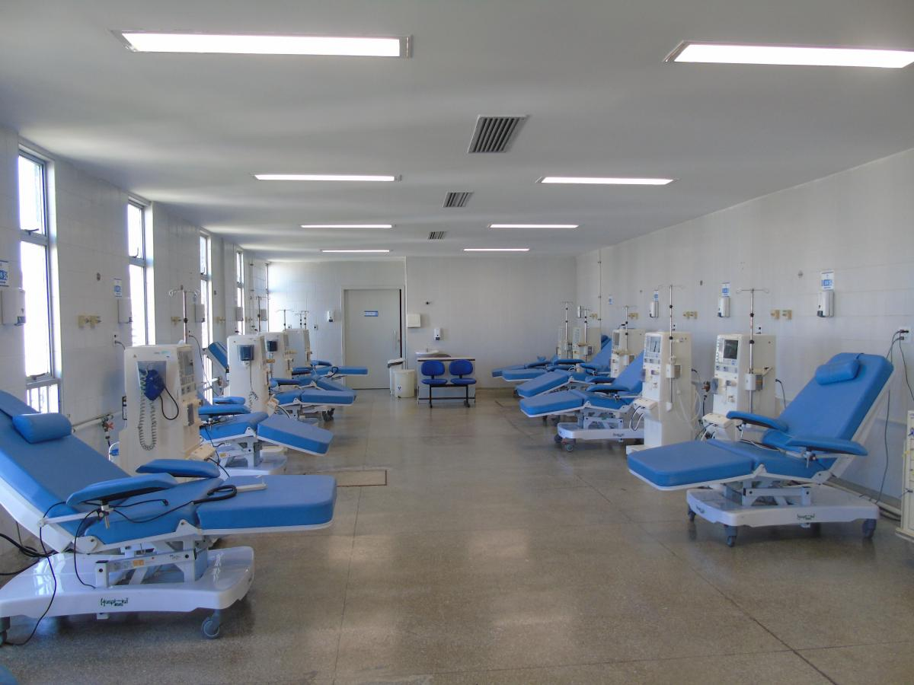
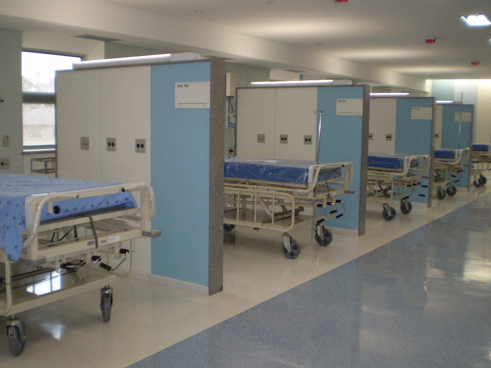

QUEM SOMOS
Sobre a FMUSP
A Faculdade de Medicina da USP é uma das mais renomadas da América Latina, com tradição em ensino, pesquisa e assistência médica desde 1912.
Hospital das Clínicas
O HCFMUSP é o maior complexo hospitalar da América Latina, referência em atendimentos de alta complexidade pelo SUS.
Entrada do Instituto Central do Hospital das Clínicas
Nossa Missão
Promover saúde com excelência em educação, pesquisa e atendimento à população.
Área de tratamento do Hospital das Clínicas
Nossa Visão
Ser referência mundial em ensino, pesquisa e saúde pública.
Centro de atendimento especializado
Nossos Valores
- Excelência
- Ética
- Humanização
- Inovação
- Responsabilidade social
- Trabalho em equipe